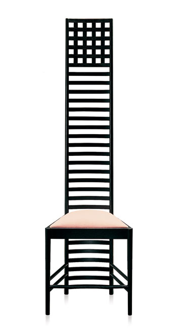

Descripción
La Hill House Chair, conocida popularmente como la “silla Mackintosh”, fue diseñada en 1902 por el arquitecto Charles Rennie Mackintosh para el dormitorio de la Hill House (casa de la Colina) de Helenburgh, cerca de Glasgow. Con un diseño de clara inspiración japonesa, a la silla Mackintosh se la considera uno de los primeros diseños del Movimiento Moderno. Además la retícula de pequeños cuadrados superiores en esta silla es precisamente el motivo decorativo más asociado a Mackintosh.
Originalmente estaba pintada de blanco y tiene un respaldo de 1,41m de alto.
¿Función o decoración?
Su principal objetivo nunca fue funcional o comercial, sino decorativo: Es una obra de arte para contemplar y admirar, más que para sentarse a diario.
Materiales
- Madera de fresno teñida de negro (actualmente lacada).
- Asiento tapizado en terciopelo.